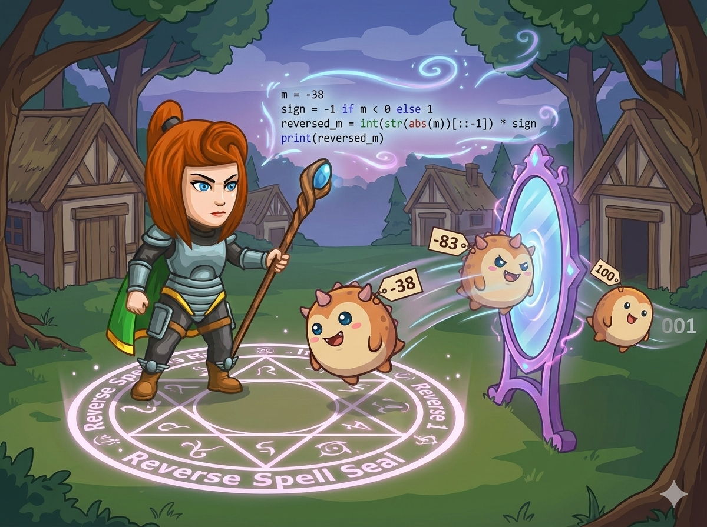

平原森林的宠物们正在参加“体重魔法赛”。
卷轴上记录着体重的变化：
🍰 正数： 增重 (如 25)
❄️ 负数： 减重 (如 -38)
可是，食人魔施放了“翻转诅咒”，把数字顺序倒过来了！
你需要编写“翻转魔法”：保留符号，只翻转数字部分。

这道题的核心是：如何用纯数学的方法把一个整数倒过来？
假设我们要翻转 n = 123，结果存在 ans (初始为0)。
公式：ans = ans * 10 + n % 10;
do-while 的特点是 “先做再判断”。
如果输入是 0，普通 while 可能直接跳过，而 do-while 会进去执行一次，输出 0，这正是我们想要的！
负数取余在不同编译器下表现不同，容易出错。
💡 最佳策略： 先判断正负，记下符号，把 n 变成正数去翻转，最后再把符号乘回来。
和 C++ 一样，利用 % 10 取最后一位，// 10 删最后一位。
累加公式：ans = ans * 10 + digit。
这种方法会自动处理前导零（例如 100 -> digit:0,0,1 -> ans: 0 -> 0 -> 1）。
Python 处理翻转最快的方法其实是字符串切片 [::-1]。
但在练习循环逻辑时，我们推荐掌握数学方法，因为它在所有编程语言中都通用！
使用数学方法翻转，完美解决前导零和负数问题。
#include <iostream> using namespace std; int main() { // 使用 long long 防止翻转后溢出 long long n; cin >> n; // 1. 处理符号：先存起来，把 n 变成正数 int sign = 1; if (n < 0) { sign = -1; n = -n; // 变成正数方便计算 } long long ans = 0; // 2. 使用 do-while 循环进行翻转 do { // 公式：旧答案左移一位 + 新取出的个位 ans = ans * 10 + n % 10; // 砍掉最后一位 n /= 10; } while (n > 0); // 只要还有数字就继续 // 3. 还原符号输出 cout << ans * sign << endl; return 0; }
使用 while 循环模拟翻转过程。
n = int(input()) # 1. 处理符号 sign = 1 if n < 0: sign = -1 n = -n # 转为正数 ans = 0 # 2. 循环翻转 (Python 没有 do-while，用 while 即可) while n > 0: digit = n % 10 # 取出最后一位 ans = ans * 10 + digit # 拼接到新数字的末尾 n = n // 10 # 去掉最后一位 (注意用整除 //) # 3. 还原符号输出 print(ans * sign) # --- 拓展：字符串切片法 (仅供参考) --- # s = input() # if s[0] == '-': # print("-" + str(int(s[1:][::-1]))) # else: # print(int(s[::-1]))